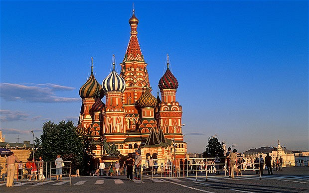

Rússia |
|
A Rússia , é um país localizado no norte daEurásia.Com 17 075 400 quilômetros quadrados, a Rússia é o país com maior área do planeta, cobrindo mais de um nono da área terrestre. É também o nono país mais populoso, com 142 milhões de habitantes.Faz fronteira com os seguintes países, de noroeste para sudeste: Noruega, Finlândia, Estônia, Letônia, Lituânia e Polônia(ambas através do exclave de Kaliningrado), Belarus, Ucrânia,Geórgia, Azerbaijão, Cazaquistão, China, Mongólia e Coreia do Norte. Também tem fronteiras marítimas com o Japão, pelo Mar de Okhotsk, e com os Estados Unidos, pelo Estreito de Bering. A história russa inicia-se com os eslavos do leste, que surgiram como um grupo étnico reconhecido na Europa entre os séculos III e VIII.Fundada e dirigida por uma classe nobre de guerreiros viquingues e por seus descendentes, o primeiro Estado eslavo, a Rússia de Quieve, surgiu no século IX e adotou o cristianismo ortodoxo do Império Bizantino em 988, dando início à síntese das culturas bizantina eeslava, o que acabou por definir a cultura russa. O principado finalmente se desintegrou e suas terras foram divididas em vários pequenos Estados feudais. O Estado sucessor de Quieve foiMoscóvia, que serviu como a principal força no processo de reunificação da Rússia e na luta de independência contra a Horda de Ouro mongol. Moscóvia gradualmente reunificou os principados russos e passou a dominar o legado cultural e político da Rússia de Quieve. Por volta do século XVIII, o país teve grande expansão territorial através da conquista, anexação e exploração de vastas áreas, tornando-se o Império Russo, entre 1721 e 1917, que foi o terceiro maior império da história, se estendendo da Polônia, na Europa, até oAlasca, na América do Norte. O país estabeleceu poder e influência em todo o mundo desde os tempos do império até se tornar a maior e principal república constituinte da União das Repúblicas Socialistas Soviéticas (URSS), entre 1922 e 1991, o primeiro e maior Estado socialista constitucional, reconhecido como uma superpotênciae que desempenhou um papel decisivoapós a vitória aliada na Segunda Guerra Mundial. A Federação da Rússia foi criada na sequência da dissolução da União Soviética, em 1991, mas é reconhecida como o Estado sucessor da URSS. O país é a décima segunda maior economia do mundo por PIB nominale a sexta maior economia do mundo em paridade do poder de compra e com o quinto maior orçamento militar nominal. É um dos cinco Estados reconhecidos com armas nucleares do mundo, além de possuir o maior arsenal de armas de destruição em massa do planeta.A Rússia é membro permanente do Conselho de Segurança das Nações Unidas, membro do BRICS, G20, Cooperação Econômica Ásia-Pacífico (APEC), Organização para Cooperação de Xangai (OCX), EurAsEC, além de ser um destacado membro daComunidade dos Estados Independentes (CEI). O povo russo pode se orgulhar de uma longa tradição de excelência em todos os aspectos das artes e das ciências,bem como uma forte tradição emtecnologia, incluindo importantes realizações como o primeiro voo espacial humano.
 |